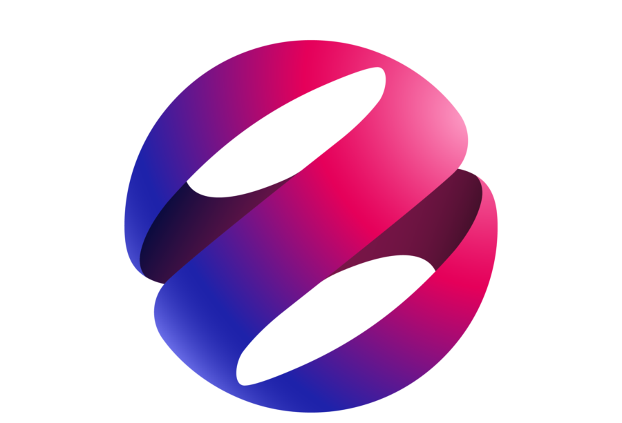

About me
I’m currently a Senior IT Auditor at EY Indonesia with hands-on experience in ITGC, application controls, and cybersecurity posture assessments across industries like e-commerce, transportation, manufacturing, and utilities. I specialize in reviewing systems like SAP, Oracle, and Microsoft Dynamics to help clients identify risks, close control gaps, and align with regulatory and audit requirements. Passionate about helping organizations build secure and resilient IT environments while delivering strong audit outcomes.
Resume
Education
-
Telkom University – Bachelor of Information Systems (International Class)
2018 — 2022Graduated with GPA 3.74/4.00. Practicum assistant for Information Security, Operating Systems, and Network Management.
Experience
-
EY Indonesia – Senior, Technology Risk (IT Audit)
2022 — PresentLed ITGC and application control audits for enterprise clients (SAP, Oracle, Dynamics); assessed cybersecurity gaps and assisted client's IT teams on remediation.
-
PT. Bank Jago Tbk – IT Governance, Risk & Compliance Intern
Jun 2022 – Sep 2022Supported IT audit readiness by preparing documents for BI and OJK and assisted with IT policy & procedure updates.
-
 PT. XL Axiata Tbk – IT Governance, Risk & Compliance Intern
Aug 2021 – Jun 2022Supported ISO 27001 surveillance audit and developed cybersecurity awareness materials.